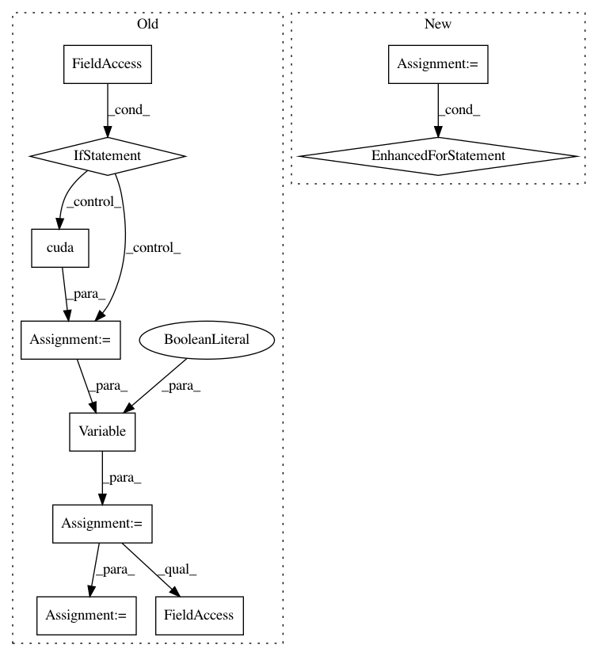

645c7c386e62d2fb1d50f4621c1a52645a13869f,fast_neural_style/neural_style/neural_style.py,,stylize,#Any#,137
Before Change
])
content_image = content_transform(content_image)
content_image = content_image.unsqueeze(0)
if args.cuda:
content_image = content_image.cuda()
content_image = Variable(content_image, volatile=True)
style_model = TransformerNet()
style_model.load_state_dict(torch.load(args.model))
if args.cuda:
style_model.cuda()
output = style_model(content_image)
if args.cuda:
output = output.cpu()
output_data = output.data[0]
utils.save_image(args.output_image, output_data)
def main():
After Change
with torch.no_grad():
style_model = TransformerNet()
state_dict = torch.load(args.model)
// remove saved deprecated running_* keys in InstanceNorm from the checkpoint
for k in list(state_dict.keys()):
if re.search(r"in\d+\.running_(mean|var)$", k):
del state_dict[k]
style_model.load_state_dict(state_dict)
style_model.to(device)
output = style_model(content_image).cpu()
utils.save_image(args.output_image, output[0])
In pattern: SUPERPATTERN
Frequency: 3
Non-data size: 10
Instances
Project Name: pytorch/examples
Commit Name: 645c7c386e62d2fb1d50f4621c1a52645a13869f
Time: 2018-04-24
Author: soumith@gmail.com
File Name: fast_neural_style/neural_style/neural_style.py
Class Name:
Method Name: stylize
Project Name: pytorch/examples
Commit Name: b87368e1e7fd832b505db9cc08015ac7af8f95de
Time: 2016-12-23
Author: jvanamersfoort@twitter.com
File Name: VAE/main.py
Class Name:
Method Name: train